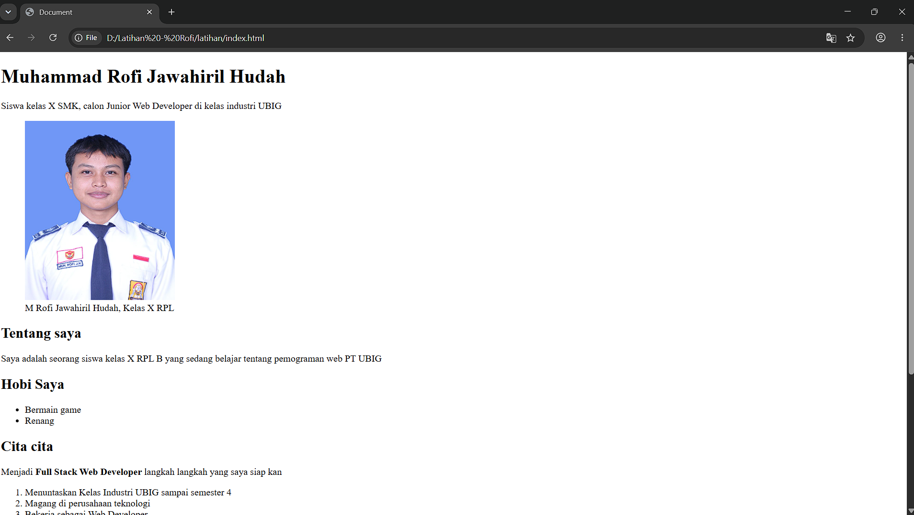
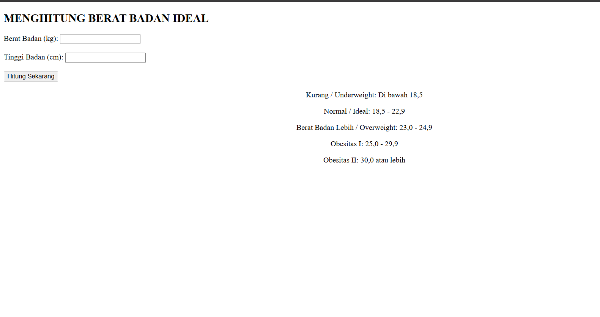
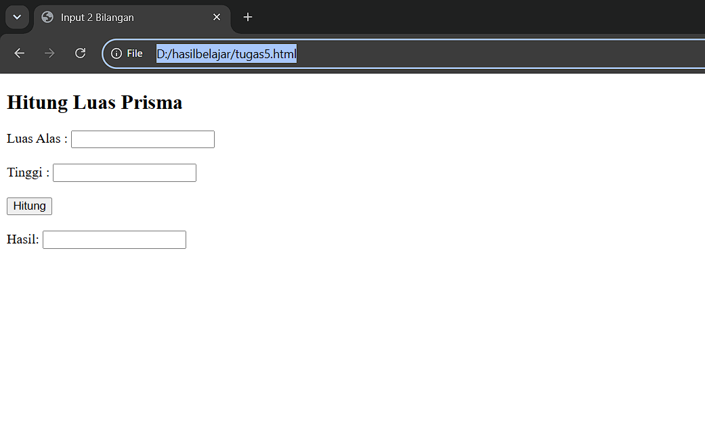

Halaman Profil Pertama (UBIG)

Halaman web pertama saya di kelas UBIG, berisi perkenalan, foto, hobi, cita-cita, keahlian, dan kontak. Dibuat dengan HTML dasar di Minggu 01.
Beberapa proyek yang saya buat:

Halaman web pertama saya di kelas UBIG, berisi perkenalan, foto, hobi, cita-cita, keahlian, dan kontak. Dibuat dengan HTML dasar di Minggu 01.

Halaman web yang saya buat untuk menghitung Berat Badan Ideal.

Halaman web yang saya buat untuk menghitung bangun Prisma.